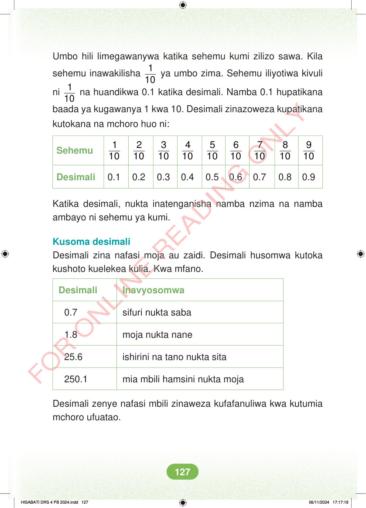

Umbo hili limegawanywa katika sehemu kumi zilizo sawa. Kila sehemu inawakilisha 1 10 ya umbo zima. Sehemu iliyotiwa kivuli ni 1 10 na huandikwa 0.1 katika desimali. Namba 0.1 hupatikana baada ya kugawanya 1 kwa 10. Desimali zinazoweza kupatikana kutokana na mchoro huo ni: Sehemu 1 10 2 10 3 10 4 10 5 10 6 10 7 10 8 10 9 10 Desimali 0.1 0.2 0.3 0.4 0.5 0.6 0.7 0.8 0.9 Katika desimali, nukta inatenganisha namba nzima na namba ambayo ni sehemu ya kumi. Kusoma desimali Desimali zina nafasi moja au zaidi. Desimali husomwa kutoka kushoto kuelekea kulia. Kwa mfano. Desimali Inavyosomwa 0.7 sifuri nukta saba 1.8 moja nukta nane 25.6 ishirini na tano nukta sita 250.1 mia mbili hamsini nukta moja Desimali zenye nafasi mbili zinaweza kufafanuliwa kwa kutumia mchoro ufuatao. HISABATI DRS 4 PB 2024.indd 127 HISABATI DRS 4 PB 2024.indd 127 06/11/2024 17:17:18 06/11/2024 17:17:18